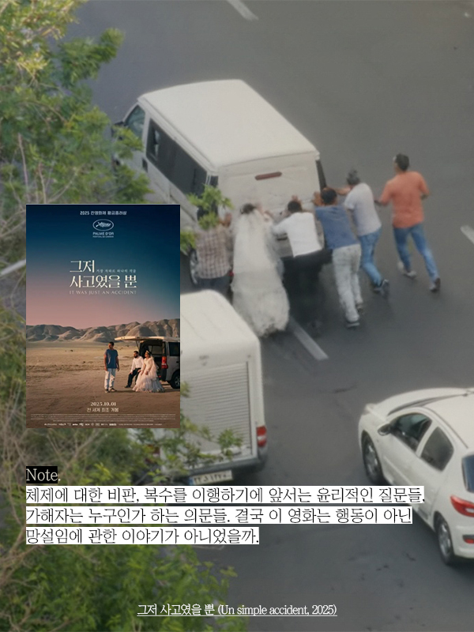

그저 사고였을 뿐, Un simple accident
2025 | 드라마 | 감독 자파르 파니히 | 출연 바히드 모바셰리, 마리암 아프샤리

NOTE
어느 늦은 밤, 불빛이 하나도 없는 캄캄한 도로에서 들개를 치는 사고를 낸 한 남자. 사고 직후 차 안에서 나누는 남자-아내-딸의 대화가 이 영화의 프롤로그인데 아주 인상적이다. 어른들은 도로에 불빛이 없었고, 그래서 보지 못했고, 그저 사고였을 뿐이라고 하지만, 아이는 그건 일어날 일이 일어난 게 아니고, 신의 뜻도 아니고, 여기에서 하나님은 아무 상관 없다고 대답한다. 체제에 대한 비판, 복수를 이행하기에 앞서는 윤리적인 질문들, 가해자는 누구인가 하는 의문들. 결국 이 영화는 행동이 아닌 망설임에 관한 이야기가 아니었을까. “폭력을 행할 수 있었던 상황이었지만, 끝내 행하지 못하고, 그로 인해 누구도 구원받지 못하는 결말. 따라서 정의가 좌절되는 게 아닌 정의라는 개념 자체가 작동 불가능해진 상태”라는 정성일 평론가의 말에 크게 동의한다.
Quote
Q : 정치적인 것과 예술적인 것 사이의 균형에 대해서는 어떻게 생각하나.
A : 나는 예술적인 방식을 선택할 뿐이다. 어떤 주제를 이야기하든, 내 생각을 관객에게 강요하지 않으려 한다. 많은 사람들이 나의 영화에 대해 법에 대한 것인지, 정의에 대한 것인지 묻는다. 하지만 사람들에게 전하고 싶은 말은 명확하다. ‘이 폭력은 계속되어야만 하는가. 언젠가는 멈춰야 하지 않을까.’ - 씨네21, 자파르 파나히 감독 인터뷰 중에서
Synopsis